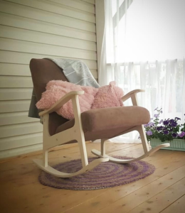
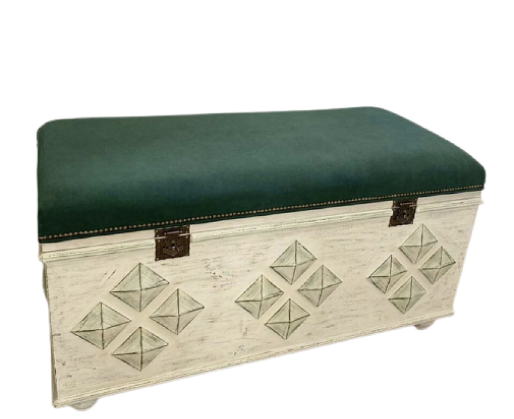
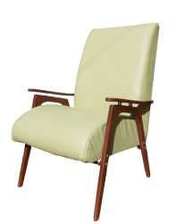

Нам доверяют мебель с историей в 120 лет
 До |
 После |
 До |
 После |
 До |
После |
 До |
 После |
Какие техники изучите на МК
- Снятие старой краски
- Устранение царапин и мелких дефектов
- Ремонт маленьких и больших сколов
- Ремонт поломанной и расклеившейся мебели
- Замена старых поврежденных деталей
- Приемы и идеи декора. Улучшение дизайна старой мебели
- Покраска изделия
Подари вторую жизнь старой мебели и сохрани историю вашей семьи
 Буфет |
 Сундук |
 Комод |
 Советское кресло |
 Стол |
 Стул |
 Обивка стула |
 Ремонт стула |
 Консольный столик |
Столярное дело для начинающих |
Руководство по редизайну деревянной мебелиЗдесь мы собрали всю информацию от подбора инстурментов и материалов до сборки мебели и фурнитуры. Чтобы вы самостоятельно могли разобраться с нюансами работы со старой мебелью из дерева. Наше руководство непременно станет вашей настольной книгой по реставрации мебели. |